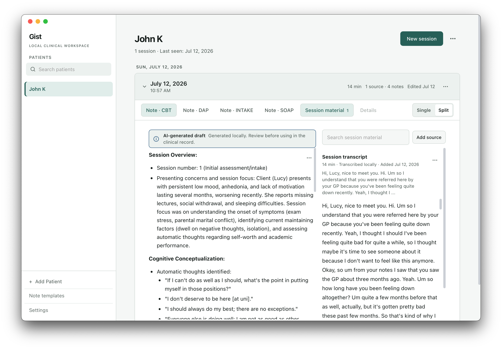
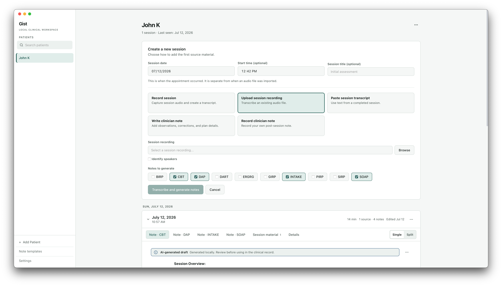
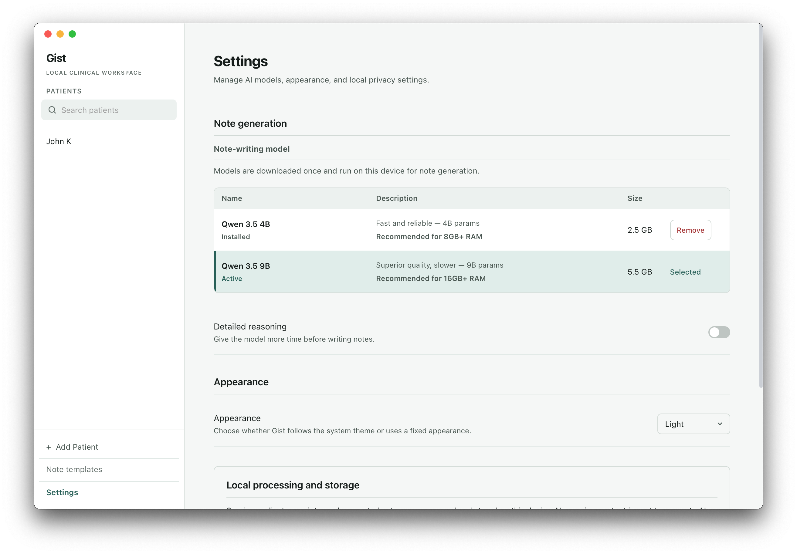

Private by architecture
Gist's models run on your Mac. There is no account, telemetry, cloud sync, clinical-data upload, or hidden online processing.
Gist records or imports a therapy session, organizes its clinical evidence, and drafts an editable note through a local, evidence-first pipeline. No account, no subscription, and no clinical data sent to a cloud service—ever.
Not a one-pass transcript summary: selected source material is processed into a reusable encounter evidence ledger before a note is written.
macOS 14.2+ · Apple Silicon · Free and open source

Independent therapists deserve documentation help without paying indefinitely or trusting an additional company with intimate conversations. Gist is a small, focused alternative for technically curious clinicians who would rather keep the work on their own machine.
Gist's models run on your Mac. There is no account, telemetry, cloud sync, clinical-data upload, or hidden online processing.
Gist organizes note-worthy source material into one encounter evidence ledger before asking a model to write polished clinical prose.
Draft SOAP, DAP, CBT, intake, and custom formats, then check and edit every result beside its source.
The transcript and note stay connected. For recorded or imported audio, Gist separates speaker turns locally and makes a best-effort attempt to label the practitioner and patient(s).
Keep your session history in one local workspace.
Use session audio, a pasted transcript, or your own observations—and choose which sources contribute to the note.
Gist extracts note-worthy information while preserving attribution, uncertainty, timing, and action status.
Generate one or more formats from the shared evidence, then check each draft against the source.

Instead of summarizing a full transcript in one pass, Gist first creates a chronological, format-neutral evidence ledger. SOAP, DAP, CBT, intake, and custom drafts all begin from that same source-grounded representation.
Transcript, observations, and other included session material.
Preserve who said what, negation, uncertainty, timing, quantities, and commitments.
Retain supporting excerpts, remove duplicates, and organize evidence chronologically.
Generate multiple formats from shared evidence, then review and edit beside the source.
This pipeline is designed to improve source fidelity and reduce opportunities for unsupported additions, attribution errors, and information loss. It is an engineering safeguard—not a guarantee of correctness or clinical validation.
Speech recognition, speaker diarization, best-effort speaker-role identification, evidence extraction, note generation, caching, and storage all happen on your Mac. Gist never uploads recordings, transcripts, client records, session evidence, or generated notes. Internet access is needed only for model downloads and application update checks.
Speaker diarization is generally useful on clear recordings, though it is not perfect and can make mistakes with noisy audio, overlapping speech, or unexpected participant counts. Role identification is a best-effort second step. Local architecture reduces the compliance surface; it does not make a practice automatically HIPAA compliant. Device security, access, backups, consent, retention, and clinical use remain the practitioner’s responsibility.
Read the technical privacy details
I studied Economics and Psychology before becoming an ML engineer. I now build AI systems in legal research, another field where a confident wrong answer can have real consequences.
Gist is where those parts of my background meet. It is a personal open-source project—not a clinical platform or a subscription funnel—and I have not practiced as a therapist. The beta now needs the judgment I cannot supply alone: candid feedback from people who do this work every day.
Please do not include client names, session content, recordings, or other identifying information.
The beta is functional, but it has not yet been validated in clinical practice. Speaker diarization is enabled by default for audio sessions and is generally useful, though not perfect; role identification is a best-effort second step. Generated notes are drafts and should be checked against their source before use.
Gist is documentation assistance, not a diagnostic or clinical decision-making system. Review every generated note against the source material before using it in a clinical record.